Una radiografía aplana todo; una tomografía lo separa
Las dos imágenes salen de la misma tomografía. La radiografía es un plano de píxeles: todo queda encimado. La tomografía es un cubo de vóxeles: cada punto tiene su propia densidad y se puede ver por dentro.
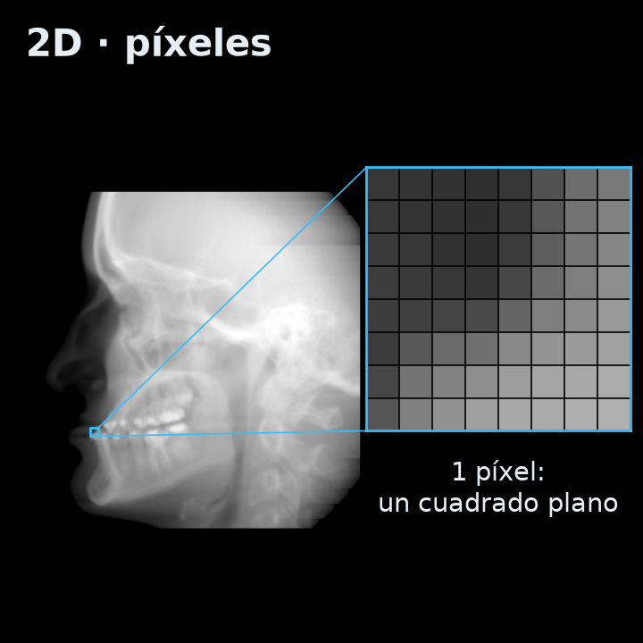
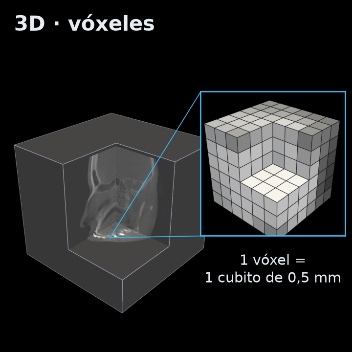
Lo que hace el programa
- Navegación multicorte: recorre el cubo capa por capa en tres planos.
- Reconstrucción 3D por densidad: deja solo una estructura y la convierte en un modelo que se gira, se ilumina y se corta.
Se apoya en tres ideas de computación gráfica: vóxeles, extracción de superficies e iluminación.
El CBCT: un cono de rayos X y una sola vuelta
El CBCT (tomografía de haz cónico) gira una sola vez alrededor de la cabeza. Usa menos radiación que un CT de hospital, pero tiene más ruido y sus números de densidad no están calibrados.
Vóxel
CTmás largo en altura
CBCTcubito de 0,1–0,5 mm
Buen detalle de dientes y raíces en 3D
Radiación
CTmás dosis
CBCTmenos dosis, más rápido
Por eso es el estándar en odontología
Ruido
CTbajo
CBCTalto (radiación dispersa)
El programa suaviza antes de crear la malla
Valores
CTcalibrados en Hounsfield
CBCTcambian según el equipo
El programa normaliza cada estudio
Qué tomografías usamos y cómo vienen
Tomografías públicas y anonimizadas, con el tamaño del vóxel en mm. Para los dientes se revisaron nueve conjuntos y se usan dos: la muestra de 3D Slicer y STS-3D-Tooth. Para probar huesos rotos se suman cuatro conjuntos médicos de otras partes del cuerpo (ver la sección 11).
Muestra CBCT de 3D Slicer
360×360×330 vóxeles de 0,5 mm, con brackets. Dos estudios del mismo paciente, antes y después de una cirugía.
STS-3D-Tooth
Tomografías con cada diente marcado por expertos. Con 11 pacientes se midió qué umbral separa mejor los dientes.
Descartados
PhysioNet: acceso restringido. CTooth: sin descarga verificable. STS "Integrity": el tamaño del vóxel no es el real.
Del archivo al volumen
- DICOM, el formato de los equipos: un archivo por corte, con una cabecera de datos y la imagen.
- Los cortes se ordenan por altura y se apilan en un cubo
(z, y, x). - El número guardado se pasa a densidad:
valor × pendiente + intercepto. - Sin el tamaño del vóxel el 3D sale estirado.
- Privacidad: los estudios nunca se suben al repositorio, y un script revisa que la cabecera venga anónima.
El programa: una ventana con 2D y 3D
Una aplicación de escritorio en Python (PySide6 + PyVista/VTK). Cada módulo hace una sola cosa y tiene sus pruebas automáticas.
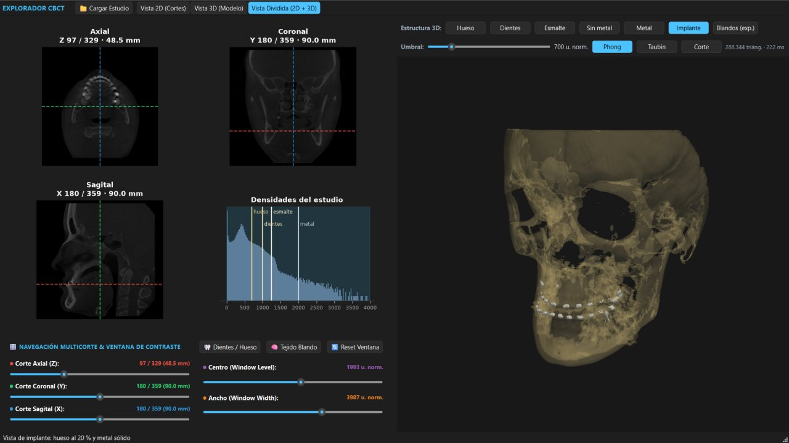
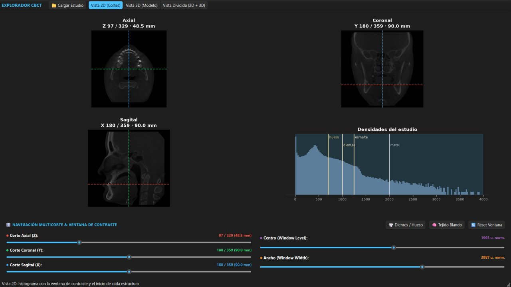
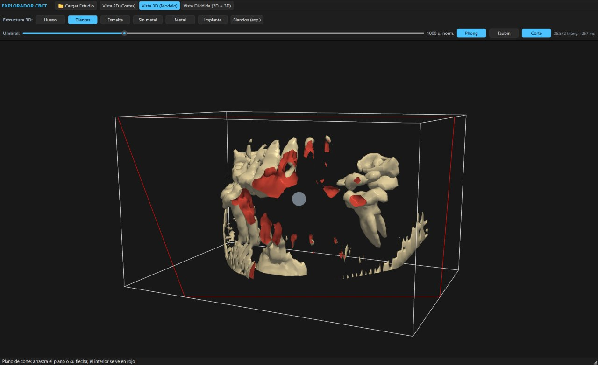
Decisiones de diseño
- Módulos con contratos (
Estudio,VisorCortes,Render3D): se desarrollaron por separado y se unieron en una ventana. - Normalización por picos: cualquier estudio queda en la misma escala (ver densidad).
- Nivel de detalle automático: con estudios grandes el 3D baja la resolución para seguir fluido.
Abrir la aplicación
pip install -r requirements.txt
python -m src.app_qt data/raw/PreDentalSurgery.gipl.gzLos estudios van en data/raw/ y no se versionan. Los modelos de esta página salen de scripts/generar_web.py, con los mismos rangos de la aplicación.
Un cubo de vóxeles, visto en tres planos
Cada vóxel guarda cuánto frena los rayos X el material que hay ahí: su densidad. Pasa el ratón para leer un vóxel; haz clic para mover los otros dos cortes.
Ventana / nivel. La pantalla muestra ~256 grises y el volumen tiene miles de valores. La ventana elige qué rango se ve; lo de abajo sale negro y lo de arriba, blanco.
Cada plano se dibuja con la proporción real de su vóxel, para que no salga estirado. Esta vista usa 1 de cada 2 vóxeles para que la página sea liviana.
Hounsfield, anatomía y por qué hay que normalizar
Cada tejido tiene un rango de densidad. En ese orden se pueden "pelar" las capas del volumen.
El orden que aprovecha el umbral
aire < tejido blando ≈ pulpa < hueso < dentina < esmalte < metal
- El esmalte es el tejido más mineralizado del cuerpo; la pulpa es blanda, por eso en el modelo aparece como un hueco.
- Se cruzan: el hueso cortical denso vale lo mismo que la dentina. Ningún umbral los separa, así que el programa limita los dientes a la zona de la boca.
Hounsfield (HU)
En un CT calibrado el agua vale 0 y el aire −1000. En el CBCT no: los números cambian con el equipo y la posición.
El CBCT no está en Hounsfield
En la muestra el aire vale 0, y en otro estudio del mismo paciente, −2239. Con números así, un umbral fijo aislaría cosas distintas.
Solución (escala.py): buscar los picos de aire y tejido blando en el histograma y
llevarlos a 0 y 410 con una recta, como calibrar un termómetro con dos puntos fijos.
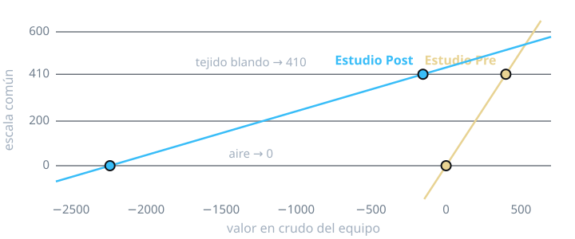
La barra de umbral: qué es hueso, qué es diente
Todo vóxel con densidad mayor o igual al umbral forma parte de la estructura. Subir el umbral va quitando capas: tejido blando → hueso → dientes → esmalte → metal.
Histograma de densidades
Cuántos vóxeles hay de cada densidad (escala logarítmica). En celeste, lo que pasa el umbral; clic para fijarlo.
- Pico en 0: el aire. Pico cerca de 410: el tejido blando.
- De 600 a ~1300, hueso y dientes; por encima de ~2000, solo metal.
Los rangos (700, 1000, 1250, 2000) se midieron en esta tomografía y coinciden con los percentiles más altos del volumen: los dientes son menos del 1 % de los vóxeles.
Marching cubes: del gris a la malla 3D
El algoritmo marching cubes (Lorensen y Cline, 1987) pone triángulos donde la densidad cruza el umbral. Abajo, su versión 2D sobre un pedazo real de un diente, y el cubo que usa en 3D.
- El volumen se recorre en cubos de 8 vóxeles (en 2D, celdas de 4).
- Cada esquina queda dentro o fuera del umbral, y una tabla dice qué triángulos poner.
- Cada vértice se ubica por interpolación lineal (puntos blancos): la superficie pasa entre los vóxeles, sin escalones.
- La normal sale del gradiente de la densidad y se usa para iluminar.
En el programa: contour(..., method="flying_edges") de VTK, una versión multihilo 4–5 veces más rápida.
El modelo 3D: estructuras, luz, suavizado, corte y rendimiento
Mallas calculadas con el código del programa sobre la tomografía real. Arrastra para girar y usa la rueda para acercar.
Aislar estructuras por densidad
Rangos en src/densidades.py; dientes y esmalte limitados a la zona de la boca. La piel no se
publica porque reconstruye la cara del paciente.
Iluminación: plano, Gouraud o Phong
- Plano: una normal por triángulo; se ven las facetas.
- Gouraud: luz en los vértices; se pierden los brillos pequeños.
- Phong: luz en cada píxel; los brillos marcan curvas finas como las raíces. Es el que usa el programa.
Cuánto cuestan los triángulos
- Extraer la superficie depende de los vóxeles: se paga al cambiar el umbral.
- Dibujarla depende de los triángulos: se paga en cada cuadro al girar.
El programa usa 1 de cada 2 vóxeles (4,4× menos triángulos), flying edges, recalcula al soltar la barra y, con estudios grandes, baja la resolución solo. Ver resultados.
Suavizar sin perder la forma
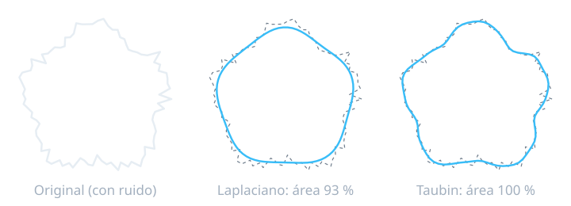
- Antes de la malla: filtro gaussiano sobre el volumen (0,5 mm en hueso y dientes; el esmalte no, porque es delgado).
- Laplaciano: cada vértice va al promedio de sus vecinos; suaviza, pero encoge.
- Taubin: alterna un paso que encoge y otro que infla: no encoge.
Plano de corte: ver por dentro
Lo que queda de un lado del plano se oculta. La superficie es una cáscara: al cortarla, el interior se ve en rojo y aparecen la pulpa y los conductos.
En la aplicación, el botón Corte pone un plano que se arrastra con el ratón.
Lo que encontramos
El aire vale 0 en un estudio y −2239 en otro del mismo paciente: hay que normalizar.
Medido en 11 pacientes; la literatura sugería 1300 HU.
0,086 s contra 0,408 s a resolución completa.
Incluidas dos cabezas completas, con 68 pruebas automáticas.
Calibración con 11 pacientes (STS-3D-Tooth)
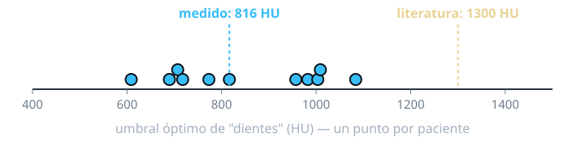
Tiempo para extraer la superficie (umbral 1000)
| Reducción | contour | marching_cubes | flying_edges | Triángulos |
|---|---|---|---|---|
| 1 (0,5 mm) | 0,408 s | 0,278 s | 0,086 s | ≈ 423 000 |
| 2 (1 mm) | 0,053 s | 0,047 s | 0,013 s | ≈ 96 000 |
| 4 (2 mm) | 0,007 s | 0,008 s | 0,002 s | ≈ 19 500 |
Volumen de 330×360×360 vóxeles. Con Taubin el volumen de los dientes cambia −1,3 %; con el Laplaciano, −10 %.
Limitaciones
Densidades que se cruzan
El hueso denso vale lo mismo que la dentina; un umbral no los separa.
El metal
Brackets e implantes superan al esmalte y dejan rayas que crean superficies falsas.
Volumen parcial
En los bordes un vóxel mezcla dos tejidos: el esmalte delgado puede caer como dentina.
Detalle vs. fluidez
Bajar la resolución hace todo fluido, pero borra raíces delgadas.
¿Se ve un hueso roto? Lo probamos con cráneo, pelvis, costillas y columna
El programa nació para CBCT dental, pero un hueso roto es la mejor prueba de si el 3D sirve de verdad: una fractura mide uno o dos vóxeles y desaparece con cualquier suavizado. Probamos la vista Fractura con tomografías médicas públicas con fracturas, fuera de la boca. Muestra solo hueso: nunca piel ni cara.
Resolución completa: el gaussiano de los otros presets promedia la grieta con el hueso de al lado y la borra.
Cráneo, pelvis, costillas y columna, de cuatro conjuntos públicos.
En pelvis y costillas (99,3 a 99,9 %), medido contra las fracturas que marcaron los expertos.
Ninguno de los fragmentos de pelvis y costillas desaparece al quitar la camilla.
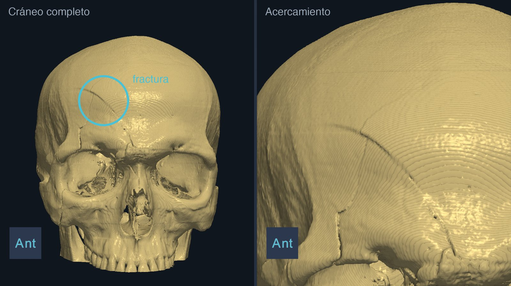
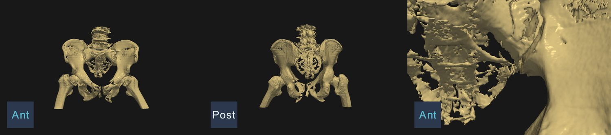
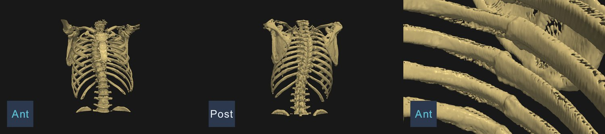
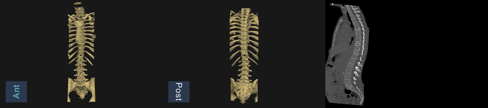
Cómo lo medimos
Hueso marcado por los expertos que sigue en pantalla
| Estudio | Parte | Hueso marcado conservado | Perdidos | Triángulos |
|---|---|---|---|---|
| CQ500-CT-397 | Cráneo | — | — | 3,7 M |
| PENGWIN 024 | Pelvis | 99,3 % | 0 de 9 | 1,8 M |
| PENGWIN 049 | Pelvis | 99,6 % | 0 de 8 | 2,4 M |
| RibFrac 34 | Costillas | 99,9 % | 0 de 15 | 3,6 M |
| RibFrac 127 | Costillas | 99,8 % | 0 de 26 | 4,5 M |
| RibFrac 283 | Costillas | 99,7 % | 0 de 25 | 3,7 M |
| VerSe 009 | Columna | 94,8 % | 0 de 8 | 0,7 M |
| VerSe 033 | Columna | 91,6 % | 0 de 9 | 1,0 M |
| VerSe 111 | Columna | 87,8 % | 0 de 3 | 1,2 M |
En columna la tomografía es ruidosa y los vóxeles aislados se descartan a propósito: "perdido" es un fragmento con menos de la mitad de su hueso en pantalla. Cada estudio tarda entre 1 y 25 s en calcularse.
El soporte de la camilla
El soporte de cabeza y la camilla pasan de 300 HU, así que por densidad no se distinguen del hueso.
- Primer intento: quedarse con la pieza más grande y los fragmentos chicos pegados. Funcionó con el cráneo y falló con la pelvis: sus fragmentos son piezas grandes y separadas, y se perdían 6 de 9.
- Regla final: hueso dentro del cuerpo (sin aire, con los pulmones rellenos y una apertura morfológica que borra lo delgado), sin trozos de menos de 100 vóxeles y sin piezas que nunca bajan de 6 mm bajo la piel.
El Relieve (oclusión ambiental) oscurece los huecos para que la grieta se vea como una raya; en estas pruebas su efecto es modesto.
Limitaciones
Compresión de columna
Es pérdida de altura, no una línea: el hueso osteoporótico sale poroso y las costillas tapan. Se lee en el corte sagital, que la app ya tiene.
Extremidades
No encontramos un conjunto abierto en 3D con fracturas de miembros: lo más cercano son radiografías.
No es un diagnóstico
"Conservado" mide que el filtro no borre hueso marcado, no que cada escalón sea una fractura.
Solo en Hounsfield
El umbral de 300 HU se validó en tomografías calibradas. En CBCT, cada equipo necesita su propia calibración.
Datos públicos: CQ500 (CC BY-NC-SA 4.0), PENGWIN (CC BY 4.0), RibFrac 2020 (CC BY-NC 4.0) y VerSe 2019 (CC BY-SA 4.0), con los
grados de fractura vertebral de Löffler et al. (2020). Créditos completos en results/fracturas/CREDITOS.md.
Quién hizo qué
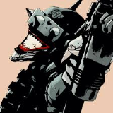
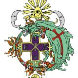
Investigación
Referencias principales
- Scarfe W.C., Farman A.G. (2008). What is cone-beam CT and how does it work? Dental Clinics of North America, 52(4), 707–730.
- Pauwels R. et al. (2015). CBCT-based bone quality assessment: are Hounsfield units applicable? Dentomaxillofacial Radiology, 44(1).
- Pauwels R. et al. (2013). Variability of dental cone beam CT grey values for density estimations. British Journal of Radiology, 86(1021).
- Reshetnikov A. et al. (2024). Dental tissue density in healthy children based on radiological data. JMIRx Med, 5, e56759.
- Lorensen W.E., Cline H.E. (1987). Marching cubes: a high resolution 3D surface construction algorithm. SIGGRAPH, 21(4), 163–169.
- Schroeder W., Maynard R., Geveci B. (2015). Flying edges: a high-performance scalable isocontouring algorithm. IEEE LDAV.
- Phong B.T. (1975). Illumination for computer generated pictures. Communications of the ACM, 18(6). · Gouraud H. (1971). IEEE Trans. Computers, C-20(6).
- Taubin G. (1995). A signal processing approach to fair surface design. SIGGRAPH '95.
- Fedorov A. et al. (2012). 3D Slicer as an image computing platform for the Quantitative Imaging Network. Magnetic Resonance Imaging, 30(9). (Muestra CBCTDentalSurgery.)
- Wang Y. et al. (2025). STS-3D-Tooth. Scientific Data, 12, 117. · Lumetti L. et al. (2026). ToothFairy3, MICCAI.